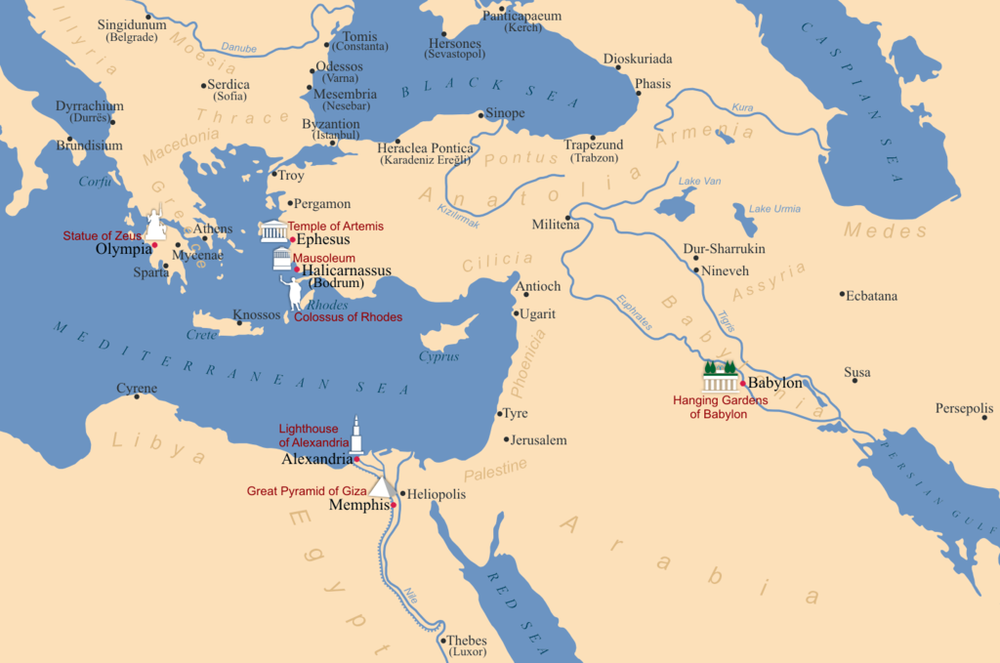

The Seven Wonders of the World or the Seven Wonders of the Ancient World is a list of remarkable constructions of classical antiquity given by various authors in guidebooks or poems popular among ancient Hellenic tourists. Although the list, in its current form, did not stabilise until the Renaissance, the first such lists of seven wonders date from the 2nd-1st century BC. The original list inspired innumerable versions through the ages, often listing seven entries. Of the original Seven Wonders, only one—the Great Pyramid of Giza (also called the Pyramid of Khufu, after the pharaoh who built it), the oldest of the ancient wonders—remains relatively intact. The Colossus of Rhodes, the Lighthouse of Alexandria, the Mausoleum at Halicarnassus, the Temple of Artemis and the Statue of Zeus were all destroyed. The location and ultimate fate of the Hanging Gardens are unknown, and there is speculation that they may not have existed at all.
The Greek conquest of much of the known western world in the 4th century BC gave Hellenistic travellers access to the civilizations of the Egyptians, Persians, and Babylonians.[1] Impressed and captivated by the landmarks and marvels of the various lands, these travellers began to list what they saw to remember them.[2][3]
Instead of "wonders", the ancient Greeks spoke of "theamata" (θεάματα), which means "sights", in other words "things to be seen" (Τὰ ἑπτὰ θεάματα τῆς οἰκουμένης [γῆς] Tà heptà theámata tēs oikoumenēs [gēs]). Later, the word for "wonder" ("thaumata" θαύματα, "wonders") was used.[4] Hence, the list was meant to be the Ancient World's counterpart of a travel guidebook.[1]
The first reference to a list of seven such monuments was given by Diodorus Siculus.[5][6] The epigrammist Antipater of Sidon[7] who lived around or before 100 BC,[8] gave a list of seven such monuments, including six of the present list (substituting the walls of Babylon for the lighthouse):[9]
I have gazed on the walls of impregnable Babylon along which chariots may race, and on the Zeus by the banks of the Alpheus, I have seen the hanging gardens, and the Colossus of the Helios, the great man-made mountains of the lofty pyramids, and the gigantic tomb of Mausolus; but when I saw the sacred house of Artemis that towers to the clouds, the others were placed in the shade, for the sun himself has never looked upon its equal outside Olympus. – Greek Anthology IX.58

The Great Pyramid of Giza, the only one of the Seven Wonders of the Ancient World still standing
Another 2nd century BC observer, who claimed to be the mathematician Philo of Byzantium,[10] wrote a short account entitled The Seven Sights of the World. However, the incomplete surviving manuscript only covered six of the supposedly seven places, which agreed with Antipater's list.[3]
Earlier and later lists by the historian Herodotus (484 BC–ca. 425 BC) and the architect Callimachus of Cyrene (ca. 305–240 BC), housed at the Museum of Alexandria, survived only as references.
The Colossus of Rhodes was the last of the seven to be completed, after 280 BC, and the first to be destroyed, by an earthquake in 226/225 BC. Hence, all seven existed at the same time for a period of less than 60 years.
The seven wonders on Antipater's list won praises for their notable features, ranging from superlatives of the highest or largest of their types, to the artistry with which they were executed. Their architectural and artistic features were imitated throughout the Hellenistic world and beyond.

The Greek influence in Roman culture, and the revival of Greco-Roman artistic styles during the Renaissance caught the imagination of European artists and travellers.[15] Paintings and sculptures alluding to Antipater's list were made, while adventurers flocked to the actual sites to personally witness the wonders. Legends circulated to further complement the superlatives of the wonders.
The list covered only the sculptural and architectural monuments of the Mediterranean and Middle Eastern regions,[10] which then comprised the known world for the Greeks. Hence, extant sites beyond this realm were not considered as part of contemporary accounts.[1]
The primary accounts, coming from Hellenistic writers, also heavily influenced the places included in the wonders list. Five of the seven entries are a celebration of Greek accomplishments in the arts and architecture (the exceptions being the Pyramids of Giza and the Hanging Gardens of Babylon).
Of Antipater's wonders, the only one that has survived to the present day is the Great Pyramid of Giza. Its brilliant white stone facing had survived intact until around 1300 AD, when local communities removed most of the stonework for building materials. The existence of the Hanging Gardens has not been proven, although theories abound.[16] Records and archaeology confirm the existence of the other five wonders. The Temple of Artemis and the Statue of Zeus were destroyed by fire, while the Lighthouse of Alexandria, Colossus, and tomb of Mausolus were destroyed by earthquakes. Among the artifacts to have survived are sculptures from the tomb of Mausolus and the Temple of Artemis in the British Museum in London.
Still, the listing of seven of the most marvellous architectural and artistic human achievements continued beyond the Ancient Greek times to the Roman Empire, the Middle Ages, the Renaissance and to the modern age. The Roman poet Martial and the Christian bishop Gregory of Tours had their versions.[1] Reflecting the rise of Christianity and the factor of time, nature and the hand of man overcoming Antipater's seven wonders, Roman and Christian sites began to figure on the list, including the Colosseum, Noah's Ark and Solomon's Temple.[1][3] In the 6th century, a list of seven wonders was compiled by St. Gregory of Tours: the list[17] included the Temple of Solomon, the Pharos of Alexandria and Noah's Ark.
Modern historians, working on the premise that the original Seven Ancient Wonders List was limited in its geographic scope, also had their versions to encompass sites beyond the Hellenistic realm—from the Seven Wonders of the Ancient World to the Seven Wonders of the World. Indeed, the "seven wonders" label has spawned innumerable versions among international organizations, publications and individuals based on different themes—works of nature, engineering masterpieces, constructions of the Middle Ages, etc. Its purpose has also changed from just a simple travel guidebook or a compendium of curious places, to lists of sites to defend or to preserve.
Of Antipater's wonders, the only one that has survived to the present day is the Great Pyramid of Giza. Its brilliant white stone facing had survived intact until around 1300 AD, when local communities removed most of the stonework for building materials. The existence of the Hanging Gardens has not been proven, although theories abound.[16] Records and archaeology confirm the existence of the other five wonders. The Temple of Artemis and the Statue of Zeus were destroyed by fire, while the Lighthouse of Alexandria, Colossus, and tomb of Mausolus were destroyed by earthquakes. Among the artifacts to have survived are sculptures from the tomb of Mausolus and the Temple of Artemis in the British Museum in London.
Still, the listing of seven of the most marvellous architectural and artistic human achievements continued beyond the Ancient Greek times to the Roman Empire, the Middle Ages, the Renaissance and to the modern age. The Roman poet Martial and the Christian bishop Gregory of Tours had their versions.[1] Reflecting the rise of Christianity and the factor of time, nature and the hand of man overcoming Antipater's seven wonders, Roman and Christian sites began to figure on the list, including the Colosseum, Noah's Ark and Solomon's Temple.[1][3] In the 6th century, a list of seven wonders was compiled by St. Gregory of Tours: the list[17] included the Temple of Solomon, the Pharos of Alexandria and Noah's Ark.
Modern historians, working on the premise that the original Seven Ancient Wonders List was limited in its geographic scope, also had their versions to encompass sites beyond the Hellenistic realm—from the Seven Wonders of the Ancient World to the Seven Wonders of the World. Indeed, the "seven wonders" label has spawned innumerable versions among international organizations, publications and individuals based on different themes—works of nature, engineering masterpieces, constructions of the Middle Ages, etc. Its purpose has also changed from just a simple travel guidebook or a compendium of curious places, to lists of sites to defend or to preserve.